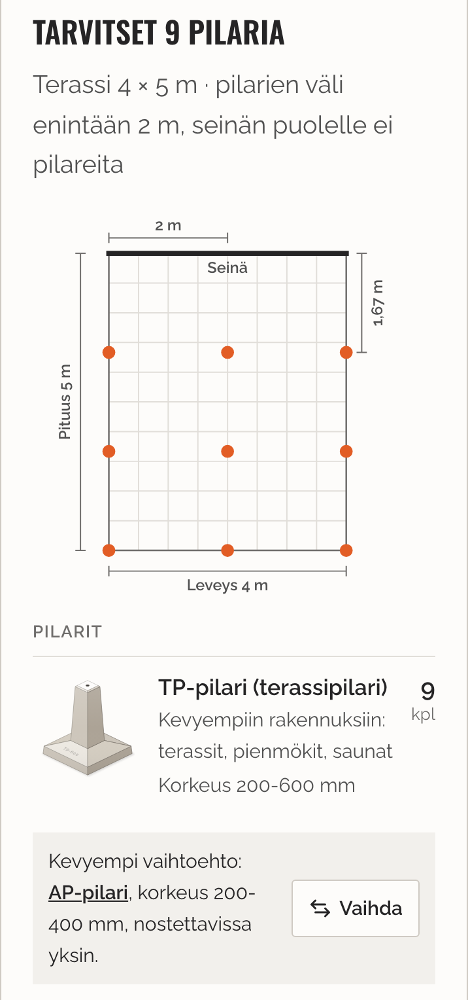
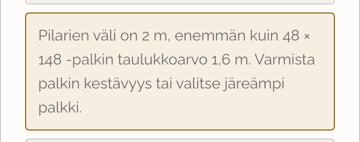
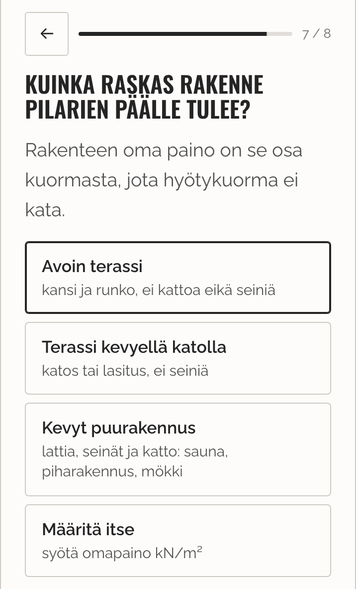

Vastaukset toteutettu
Päivitys 3.11.2026. Laskuri: Suunnittele perustus.
1. Pilarien väli vähintään 1,5 m (vaihtoehto c)
Laskuri laskee ensin palkin taulukkovälillä. Jos väli jäisi alle 1,5 m:n, välejä harvennetaan, kunnes väli on vähintään 1,5 m. Kun väli silloin ylittää palkin taulukkoarvon, tulos kertoo sen ja kehottaa varmistamaan palkin kestävyyden. Esimerkiksi 4 × 5 m terassi 48 × 148 -palkilla saa nyt 12 pilaria 2,0 × 1,67 m:n välein (ennen 20 pilaria 1,33 × 1,25 m:n välein).
Pohjapiirroksessa näkyy nyt yhden välin mitta kumpaankin suuntaan, jotta pilarit osaa sijoittaa.


2. Sokkelikiinnitys
Ei muutosta: laskuri jättää jo nyt seinän puoleisen reunan pilarit pois, ja terassi kiinnitetään sokkeliin.
3. TP suositus, AP vaihtoehto
Tulos suosittelee TP:tä ja tarjoaa AP:ta vaihtoehtona aina, kun AP kantaa kuorman. Vaihtoehtorivillä on AP:n korkeusalue ja Vaihda-painike, jolla asiakas voi vaihtaa AP:n listan pilariksi. Vaihdon jälkeen rivi tarjoaa suositeltua TP:tä takaisin. Kuva yllä.
4. Rakenteen omapaino
Painokysymyksessä on kolme luokkaa antamillanne luvuilla: avoin terassi 0,6, terassi kevyellä katolla 1,2 ja kevyt puurakennus 2,0 kN/m². Luku lisätään hyötykuormaan (2,0 kN/m²).
